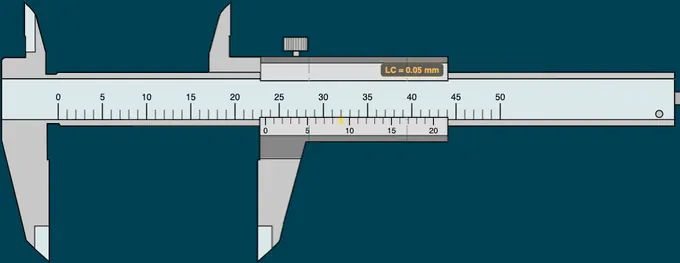
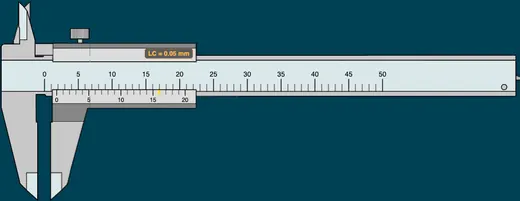
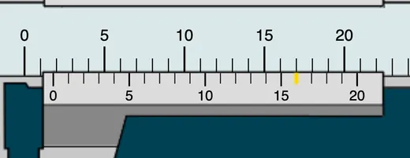

Vernier Caliper Simulator
3D Model — Vernier Caliper Simulator
Practice vernier caliper readings online — 0.02 mm, 0.05 mm and 0.1 mm scales, metric/imperial toggle, adjustable jaws, instant feedback. Free — no signup.
Interactive precision measurement trainer
1 Overview
This vernier caliper simulator is a free online tool that lets you practise reading vernier caliper scales in a realistic, interactive environment. It supports both SI (metric) and Imperial (inch) calipers as fully independent instruments. In SI mode, choose between three precision levels: 0.02 mm, 0.05 mm, and 0.1 mm least count. In Imperial mode, a standard 0.001″ least count caliper with 25 vernier divisions is used. Four modes — Simulate, Explore, Practice, and Quiz — guide you from learning theory to hands-on measurement mastery.
2 Setting the Zero
When the page loads you are in Simulate mode with SI units and 0.02 mm precision selected. To begin:
- Drag the sliding jaw left or right to set any measurement. You can also use the left/right arrow keys for fine step adjustment.
- Watch the readout badges and info row below the caliper update in real time — they show the reading, MSR, VSR, LC, and the full TR formula.
- Switch precision using the Precision (LC) pills: choose 0.05 mm, 0.02 mm, or 0.1 mm. In Imperial mode, precision is fixed at 0.001″.
- Toggle SI / Imperial to switch between a metric caliper (0–100 mm) and an inch caliper (0–4″). The entire scale redraws with the correct divisions.
- Use the Zoom button to magnify the scale area for easier reading of the vernier coincidence line.
3 Taking a Reading
In Simulate mode the caliper responds freely to your input. Drag the jaw to any position and the digital readout displays the exact measurement. This mode is ideal for exploring how the main scale and vernier scale interact. Observe how changing the jaw position shifts the vernier coincidence line — the golden-highlighted division that aligns perfectly with a main scale graduation. The formula panel breaks down every reading step by step: MSR, VSR, LC, and the final total reading. Audio feedback provides subtle click and tick sounds as you drag. Use this mode to build confidence before moving to Practice.
3b Measuring a Real Object
In Simulate mode, the Measure an object button at the bottom-right of the canvas drops a real workpiece into the jaws. Pick from nine parts — rectangular bar, standing cylinder, lying cylinder, ball bearing, cube block, M12 hex nut, Ø10 drill shank, gauge plate, and a ring/bush measured on the inside jaws.
- Choose a part. It is placed against the fixed jaw and the sliding jaw swings fully open, exactly as you would start a real measurement.
- Drag the sliding jaw left (or press ←, or use Close onto part). The jaws stop dead on the part — they cannot pass through it, whatever you do.
- When both faces make contact the part shows green contact marks, a knock sounds, and the dimension line under it reveals the part's true size.
- Now read the scale as usual: MSR + (VSR × LC).
Orientation matters. The same cylinder appears twice: standing, the jaws close on its diameter; lying down, they span its length. The hex nut must be measured across flats, never corners.
Internal diameters work the other way round. Choose the Ring / bush and it appears at the top of the instrument, sitting over the two upper knife edges, with the inside jaws already shut inside the bore. Now you open the jaws — drag right, press →, or use Open onto bore — until both nibs touch the bore wall and stop. The dimension arrows point outward into the walls, the convention for a hole on an engineering drawing. Because the nibs have a tip radius they cannot quite reach the true diameter, so a caliper reads a bore a few hundredths small; a bore gauge or internal micrometer is the right tool when that matters.
Why the reading may not match the part. The sizes are realistic, not tidy — a 5/8″ bearing ball is 15.88 mm and an M12 nut measures under its 18.00 mm nominal. On a 0.05 mm vernier the ball can only be resolved to 15.90 mm. That gap is the instrument's resolution limit, not a mistake, and the object bar spells it out. Switch to the 0.02 mm scale and it closes. Switch the same ball to the imperial caliper and it reads a clean 0.625″.
Turn Zero Error on while a part is loaded to see the effect that matters most in the workshop: the jaws still stop on the true size, but the scale reads high or low until you apply the correction.
4 How the Scale Works
Explore mode is a reference library of vernier caliper concepts, organised into five categories:
- Parts & Components: An interactive, labelled diagram of the instrument. Hover (or tap) any of the twelve numbered callouts — fixed jaw, sliding jaw, outside jaws, inside jaws, main scale beam, metric graduations, inch scale, vernier scale, vernier zero line, depth rod, thumb roller and locking screw — and the part lights up on the drawing while its description, specifications and workshop tips appear alongside.
- Vernier Types: Standard, Dial, Digital, and Depth vernier calipers — learn the differences, ranges, and applications.
- Least Count: Worked examples for 0.02 mm (50-div), 0.05 mm (20-div), 0.1 mm (10-div), and 0.001″ (25-div imperial) least counts with the LC formula.
- Zero Error: Learn to identify no error, positive error, and negative error, with correction formulas and step-by-step procedures.
- Reading Method: Step-by-step guide — read MSR, find VSR coincidence, calculate TR, and avoid common errors.
Click any card in the grid to view its detailed information panel below.
5 Practice Readings
Practice mode offers two drills side by side, and starting one ends the other so there is only ever a single target:
- Play / Pause — click Play to animate the caliper, then Pause to freeze it at a random opening. Read the scale and type the total reading.
- Measure an object — loads a random workpiece into the jaws. Drag the sliding jaw (or press ← / →) until it stops on the part, then read the scale. Check stays greyed out until the jaws are genuinely in contact, so you cannot guess your way past the measuring step.
Click Check to mark your answer — instant feedback with sound tells you whether you are correct and only then reveals the part's true size. New starts the next challenge and hands the bar back to the Play drill. Your running score is displayed.
Quiz mode: a sequence of 5 questions, of which at least two are always object-measuring tasks — the rest preset the jaws for you to read. For an object question the part arrives with the jaws thrown open and Submit is locked until you have closed onto it. After all 5, a results panel shows your score with star ratings and a row-by-row breakdown. Retake as often as you like; quizzes work in both SI and Imperial, with or without zero error.
Different parts, different sizes. Practice and Quiz draw from a separate set of workpieces to the ones in Simulate, so a size you have already met cannot simply be recalled — it still has to be measured.
6 Understanding the Reading
The vernier caliper reading involves three values:
- MSR (Main Scale Reading): In SI, the last whole millimetre mark to the left of the vernier zero. In Imperial, the last 0.025″ mark to the left.
- VSR (Vernier Scale Reading): The vernier division number that aligns exactly with any main scale graduation (shown as the golden tick).
- LC (Least Count): SI: 0.02 mm, 0.05 mm, or 0.1 mm. Imperial: 0.001″.
SI example: MSR = 23 mm, VSR = 9, LC = 0.05 mm → TR = 23 + (9 × 0.05) = 23.45 mm.
Imperial example: MSR = 0.900″, VSR = 23, LC = 0.001″ → TR = 0.900 + (23 × 0.001) = 0.923″.
7 SI vs Imperial Caliper
This simulator includes two fully independent instruments:
- SI (Metric): Main scale divided into millimetres (0–100 mm). Vernier: 20, 50, or 10 divisions. Switchable precision via Precision pills.
- Imperial (Inch): Main scale divided into 40ths of an inch (0–4″). Vernier: 25 divisions. Fixed LC = 0.001″. Precision pills are hidden since only one option exists.
Toggle between them using the SI / Imperial pills in the controls bar. The entire scale, tick marks, labels, readouts, formula, and practice/quiz answers update automatically.
8 Zero Error Simulation
The Zero Error control in the toolbar is off by default. Switch it On to simulate a miscalibrated caliper, then use the − / + stepper to set the error up to ±5 least-count divisions.
- The simulator treats the canvas reading as the observed value (the value the student reads off the scales). The yellow Zero Error card shows the calibration offset; the green Corrected card shows the true measurement: Corrected = Observed − Zero Error.
- With positive ZE (e.g. +0.06 mm at 0.02 LC), the vernier zero sits to the right of the main-scale zero when the jaws are closed — the 3rd vernier division coincides with a main-scale mark.
- With negative ZE (e.g. −0.06 mm), the vernier zero sits to the left of the main-scale zero — the 47th vernier division (on a 50-div scale) coincides. By convention this is reported as −(50−47) × LC.
- In Practice and Quiz modes each question is generated with a random zero error: read the observed value from the scales, subtract the displayed ZE, and enter the corrected (true) value.
- Turn the toggle Off at any time to return to a perfectly calibrated instrument.
9 Tips & Best Practices
- Always check for zero error before measuring — close the jaws fully and confirm the reading is exactly 0.00 mm (or 0.000″).
- Use the Zoom feature to identify the vernier coincidence line accurately — look for the line that forms a single continuous straight line with the main scale.
- In a real workshop, avoid parallax error by reading the scale from directly above, not at an angle.
- Practice with all precision settings and both unit systems to prepare for different vernier caliper types you may encounter in exams and industry.
- Use Explore mode to review theory and formulas before attempting Practice or Quiz.
- The readout badges below the canvas give you a quick glance at the current reading, LC, MSR, and VSR without scrolling to the info row.
How to Read a Vernier Caliper — Online Practice Simulator

A vernier caliper is a precision measuring instrument that reads outer dimensions, inner dimensions, and depths to 0.02 mm accuracy. Read the main scale to the left of the vernier zero, find the vernier division that aligns with any main scale line, then add: Total = MSR + (Vernier Division × Least Count).
A Vernier caliper is a precision measuring instrument used to measure linear dimensions — outer diameter, inner diameter, length, and depth — with high accuracy. This free online Vernier caliper simulator supports three precision settings: 0.02 mm least count (50-division Vernier), 0.05 mm least count (20-division), and 0.1 mm least count (10-division).
Step-by-Step: How to Read a Vernier Caliper
Step 1 — Main Scale Reading (MSR): Read the last whole millimetre mark to the left of the Vernier zero line on the main scale. Step 2 — Vernier Scale Reading (VSR): Find which Vernier graduation aligns exactly with a main scale line. Note that division number. Step 3 — Total Reading (TR): Apply the formula TR = MSR + (VSR × LC) where LC is the least count.


What is Least Count of a Vernier Caliper?
The least count (LC) is the smallest measurement value the instrument can reliably indicate. A 50-division Vernier scale gives 0.02 mm; a 20-division gives 0.05 mm; a 10-division gives 0.1 mm. This simulator lets you switch between all three.
Vernier Caliper Parts and Functions
A vernier caliper is built from twelve recognisable parts. Switch the simulator to Explore → Parts & Components for a labelled diagram where each one lights up as you hover it; the table below is the same information in reference form.
| # | Part | Function |
|---|---|---|
| 1 | Fixed jaw (main frame) | Forged in one piece with the beam; its measuring face is the zero reference for every reading. |
| 2 | Sliding jaw (vernier head) | Movable assembly carrying the vernier scale, jaws, depth rod, roller and lock. |
| 3 | Outside (external) jaws | Lower jaws; their inner faces measure shaft diameters, thicknesses and widths. |
| 4 | Inside (internal) jaws | Upper knife edges; their outer faces measure bores, slots and grooves. |
| 5 | Main scale (beam) | Rigid graduated blade — the datum that keeps both jaws parallel. |
| 6 | Metric main graduations | 1 mm divisions (1 MSD); give the main scale reading (MSR). |
| 7 | Inch (imperial) scale | Fortieths of an inch — 0.025″ per division. |
| 8 | Vernier scale | Auxiliary sliding scale whose divisions are slightly smaller than 1 MSD; sets the least count. |
| 9 | Vernier zero line | The index line, in line with the sliding jaw face; reads the MSR and reveals zero error. |
| 10 | Depth measuring rod | Slides out of the beam end to measure hole depths and slot depths. |
| 11 | Thumb roller | Fine adjustment; sets consistent, repeatable jaw contact pressure. |
| 12 | Locking screw | Clamps the head so the setting cannot drift while you read or transfer it. |
Measuring Real Objects — Practise on Parts, Not Just Numbers
Reading a scale is only half the skill; the other half is getting the part between the jaws correctly. Simulate mode lets you drop nine real workpieces into the caliper — a rectangular bar, a cylinder both standing and lying down, a ball bearing, a cube, an M12 hex nut, a Ø10 drill shank, a gauge plate, and a ring measured on the inside jaws. The jaws physically stop on the part and cannot be forced through it, so closing them teaches the same feel as the real instrument.
Measuring an internal diameter is the exercise students most often get wrong, because it runs backwards. Choose the ring and it appears at the top of the instrument, drawn at an angle so you can see into the bore, with the two upper knife edges standing inside it. Instead of closing the jaws you open them, until both nibs touch the bore wall and stop. The dimension arrows point outward into the walls — the drawing convention for a hole, and the opposite of the inward arrows used on an external size. One caution worth carrying into the workshop: the nibs carry a small tip radius, so a caliper reads a bore a few hundredths small; when that matters, use a bore gauge or an internal micrometer.
Every size is realistic rather than convenient. A 5/8″ bearing ball is 15.88 mm, an M12 nut is made under its 18.00 mm nominal across flats, and a Ø10 drill shank is ground a few hundredths small so it enters a chuck. Because of that, the reading you get depends on the instrument: on a 0.02 mm vernier the ball reads 15.88 mm exactly, on a 0.05 mm vernier it can only be resolved to 15.90 mm, and on the imperial caliper it reads a clean 0.625″. That difference between the true size and the reading is the instrument's resolution limit — one of the first ideas a metrology student needs and one that a numbers-only exercise never shows.
Two exercises are worth doing deliberately. First, load the cylinder standing and then lying down: the same part gives its diameter one way and its length the other, which is why orientation is specified on a drawing. Second, load any part and switch Zero Error on: the jaws still stop on the true size, but the scale now reads high or low until you apply the correction — exactly the trap that spoils a batch of real measurements.
The same parts are graded. Object measuring is not confined to free play: Practice adds a Measure an object drill beside Play/Pause, and every Quiz sets at least two object tasks among its five questions. In both, the Check or Submit button stays locked until the jaws are genuinely in contact with the part, so the measuring step cannot be skipped by guessing, and the true size is withheld until your answer has been marked. Graded exercises also draw from a different set of workpieces to the ones in Simulate — a size you have already met cannot simply be recalled, it still has to be measured.
Which reading do you keep? Real parts are never perfectly aligned in the jaws, so workshops use two opposite rules. On an outside diameter, rock the caliper and keep the smallest reading: a tilted jaw spans a diagonal across the workpiece and always reads large. On an internal diameter, rock the caliper and keep the largest: any line across a bore that misses the centre is a chord, and a chord is shorter than the diameter. Students who apply one rule to both cases are the ones whose readings drift.
How to Measure Internal Diameter with a Vernier Caliper
Measuring a hole is the job students most often get wrong, because the procedure runs backwards from everything else they have learned. The two small knife edges above the beam — the inside jaws, or nibs — are the ones that do it, and their outer faces are the measuring faces. On any modern nib-style caliper they read the bore directly; no jaw thickness has to be added.
- Close the inside jaws and enter the hole. The nibs must go in far enough to sit on the full bore, not on the lead-in chamfer.
- Open them — the opposite of an outside measurement — until both nibs just touch the bore wall and the caliper is snug without being forced.
- Rock the caliper gently across and along the hole and keep the largest reading. Any line across a bore that misses the centre is a chord, and a chord is always shorter than the diameter, so the maximum is the one that is true.
- Lock the screw, withdraw, and read the scale in good light: TR = MSR + (VSR × LC), exactly as for an external size.
Expect to read a little small. The nibs carry a small tip radius, so they cannot quite reach the widest point of the wall. A caliper typically reports a bore a few hundredths of a millimetre under its true size, and the error grows as the hole gets smaller relative to the nib. For general work that is acceptable; for a fitted bore — a bearing seat, a reamed dowel hole, anything with an H7 tolerance — use a bore gauge or an internal micrometer instead, and treat the caliper reading as a check rather than the number you machine to.
To practise the sequence, open Simulate, choose Measure an object and pick the ring / bush. It appears at the top of the instrument, drawn at an angle so you can see into the bore, with the two knife edges standing inside it. The jaws will not open past the wall, so the stop you feel is the measurement; the dimension arrows point outward into the walls, which is the drawing convention for a hole and the opposite of the inward arrows used on an external size.
How to Read a Vernier Caliper — Step by Step
- Close the jaws gently on the object to be measured. Ensure the object is held firmly without excessive force.
- Read the main scale — note the last graduation on the main scale that is visible to the LEFT of the zero mark on the vernier scale. This gives the whole-millimetre reading.
- Read the vernier scale — find the vernier graduation that BEST aligns (coincides) with any main scale graduation. Multiply this number by the least count.
- Add both readings: Total = Main Scale Reading + (Vernier Division × Least Count).
- Check for zero error — if the zero marks do not align when jaws are fully closed, apply the zero correction to your final reading.
Vernier Caliper Least Count Formula
| Vernier Type | Main Scale Division | Vernier Divisions | Least Count |
|---|---|---|---|
| Standard (50-division) | 1 mm | 50 | 1/50 = 0.02 mm |
| 20-division | 1 mm | 20 | 1/20 = 0.05 mm |
| 10-division | 1 mm | 10 | 1/10 = 0.1 mm |
Least Count = Smallest Main Scale Division ÷ Number of Vernier Divisions. For a standard vernier caliper with 50 divisions, the least count is 1 mm ÷ 50 = 0.02 mm. The measuring range is typically 0–150 mm or 0–300 mm.
Worked Example — Measuring a 25.12 mm Shaft with a 0.02 mm Vernier
To make the formula concrete, here is a single full reading worked out the way it would happen in a workshop. You can reproduce these exact numbers in the simulator above by setting the precision pill to 0.02 mm and dragging the sliding jaw until the readout shows 25.12 mm.
| Step | What you observe | Value |
|---|---|---|
| 1 | Last full mm mark to the left of the vernier zero on the main scale | MSR = 25 mm |
| 2 | Vernier division that lines up cleanly with any main-scale line | VSR = 6 divisions |
| 3 | Least count of a 50-division vernier | LC = 0.02 mm |
| 4 | Total reading: TR = MSR + (VSR × LC) = 25 + (6 × 0.02) | TR = 25.12 mm |
The same shaft, measured on a coarser 0.05 mm 20-division vernier, would read MSR = 25, VSR = 2, TR = 25 + (2 × 0.05) = 25.10 mm. The 0.02 mm caliper resolves the extra 0.02 mm the 20-division scale rounds off — a clear demonstration of why least count matters when you compare instruments. The simulator’s Practice mode generates random target dimensions so you can repeat this calculation until the three-step pattern (MSR → VSR → TR) becomes automatic.
Five Mistakes Students Make — and How to Catch Them
From years of marking lab reports, the same handful of vernier errors appear again and again. Use the simulator to deliberately reproduce each one so you recognise it in your own readings.
- Reading the wrong main scale division. A common slip is picking the mm mark just after the vernier zero instead of just before it — producing a reading that is exactly 1 mm too large. Fix: always identify the mm mark that the vernier zero has already passed.
- Picking the “almost aligned” vernier line. Only one vernier division will be a true co-incidence; its neighbours are visibly above or below the main scale graduations. Tilt your head, or use the simulator’s Zoom button, to confirm the alignment before committing.
- Ignoring zero error. If the jaws are closed and the vernier zero is not on the main-scale zero, every single reading is wrong by that offset. Toggle Zero Error — On in the simulator to see how a +0.04 mm error silently inflates every measurement until you correct for it.
- Wrong sign on zero error. Even students who notice the offset often apply it the wrong way. Rule of thumb: if the vernier zero is to the right of the main zero, the error is positive and you subtract it; if it is to the left, the error is negative and you add the correction.
- Excessive jaw pressure on soft materials. Squeezing a plastic spacer or thin aluminium sheet between the outer jaws can compress the part by 0.05–0.10 mm — larger than the least count itself. Close the jaws using only the fine-adjustment roller until you feel a light contact.
What Is Zero Error in a Vernier Caliper?
Zero error occurs when the jaws are fully closed but the zero marks on the main scale and vernier scale do not align. Positive zero error means the vernier zero is to the right of the main scale zero — subtract the error from readings. Negative zero error means the vernier zero is to the left — add the correction. Always check for zero error before taking measurements.
What Is the Difference Between a Vernier Caliper and a Micrometer?
A vernier caliper measures external, internal, and depth dimensions with a typical least count of 0.02 mm and range of 0–150 mm. A micrometer (screw gauge) measures only external dimensions with higher precision (0.01 mm) but a smaller range (0–25 mm per frame). Use a vernier caliper for general-purpose measurements and a micrometer when higher accuracy on small parts is needed.
What Is the Vernier Constant?
The vernier constant is another name for the least count. It equals the difference between one main scale division and one vernier scale division. For a 50-division vernier: 1 MSD − 1 VSD = 1 mm − 0.98 mm = 0.02 mm. This difference is what allows the vernier scale to resolve fractional millimetres that the main scale alone cannot measure.
What Are Common Sources of Error in Vernier Caliper Readings?
The main sources of error are: parallax error (reading the scale at an angle instead of straight-on), zero error (misaligned zero marks), thermal expansion (measuring hot workpieces), excessive jaw pressure (deforming soft materials), and worn jaws (giving inaccurate readings on old instruments). Practise correct technique using this simulator to eliminate these errors before working with real instruments.
When a Vernier Caliper Is the Wrong Instrument
A 0.02 mm vernier is a general-purpose workshop instrument, not a metrology lab tool. There are four situations where reaching for a different instrument is the correct call:
- You need tighter than 0.02 mm. Bearing fits, ground shafts, and reamed holes are typically specified to 0.01 mm or finer. Switch to a micrometer screw gauge (0.01 mm) or a digital micrometer (0.001 mm) for those.
- The feature is smaller than the jaw tip width. The outer jaws of a typical caliper are 3–5 mm wide near the tip, so groove widths or fine slot depths below that size cannot be entered. Use a feeler gauge set or a depth micrometer instead.
- The part is hot, soft, or compliant. Steel expands roughly 0.012 mm per 100 mm per 10 °C. Measuring a part fresh off a lathe at 60 °C against a caliper at 20 °C gives a false +0.05 mm on a 100 mm length. Let parts equalise to room temperature, or use a non-contact instrument.
- The dimension is above 300 mm. Sliding caliper accuracy degrades as the beam flexes. Beam calipers, height gauges (see the Height Gauge simulator), or laser distance meters give better results above 300 mm.
Vernier Caliper Practice for US CTE and NIMS Programs
In US Career and Technical Education (CTE) machining programs, community college manufacturing courses, and apprenticeship training, the vernier caliper is commonly called a slide caliper — the same instrument, different shop name. The reading method is identical whether you call it a vernier caliper, slide caliper, or vernier scale caliper.
This simulator’s Imperial mode (SI / Imperial toggle in the controls bar) trains the 0.001″ least count vernier scale found on US-standard slide calipers — the exact instrument and precision level assessed in NIMS (National Institute for Metalworking Skills) Measurement, Materials and Safety credentialing examinations. NIMS credentials are nationally recognised across US manufacturing employers and are embedded in most state CTE machining pathways.
For students in NCCER (National Center for Construction Education and Research) pipefitting, millwright, and instrumentation programs, the same slide caliper skills apply — NCCER Core Curriculum and Pipefitting Level 1 both include precision measurement using vernier and digital calipers. The Practice and Quiz modes in this simulator replicate the timed measurement tasks common in both NIMS and NCCER practical assessments.
US high school CTE programs typically follow state-adopted standards aligned with the Manufacturing career cluster (one of the 16 CCTC career clusters). Within that cluster, the Production pathway requires students to demonstrate proficiency with precision hand tools including calipers to tolerances of ±0.002″ — equivalent to ±0.05 mm. This simulator covers that tolerance range in both metric and imperial modes.
Standards and References
The geometry, graduations and accuracy classes used in this simulator follow the international standards that govern real vernier instruments. Use these citations when you are writing a lab report or specifying a caliper for purchase:
- ISO 13385-1:2011 — Geometrical product specifications (GPS) — Dimensional measuring equipment — Part 1: Design and metrological characteristics of callipers. Defines the permissible maximum errors at different measuring lengths for vernier, dial and digital calipers.
- ASME B89.1.14-2018 — Calipers. The US standard (American Society of Mechanical Engineers) governing accuracy, repeatability, and calibration of vernier, dial, and digital calipers used in American manufacturing and inspection.
- BS 887:1982 — Specification for precision vernier callipers. The British Standard still cited in many UK and Commonwealth technical education syllabi.
- DIN 862 — The German equivalent, widely referenced in European manufacturers’ calibration certificates.
- Calibration practice: NIST-traceable calibration of a 6″ (150 mm) vernier caliper typically reports the error at five points (0, 1, 2, 4, 6″) against a class-1 gauge block set; the certificate is valid for 12 months under normal shop use.
The text above is reviewed against R. K. Jain’s Engineering Metrology (Khanna Publishers, Chapter 4) and the ISO 13385-1 working draft. If you find a graduation, formula, or class limit that disagrees with a current standard, report it — corrections are issued within 48 hours.
Explore Related Simulators
If you found this Vernier Caliper simulator helpful, explore our Micrometer Screw Gauge simulator, Height Gauge simulator, Dial Gauge simulator, and Tolerance & Fits calculator for more hands-on practice.